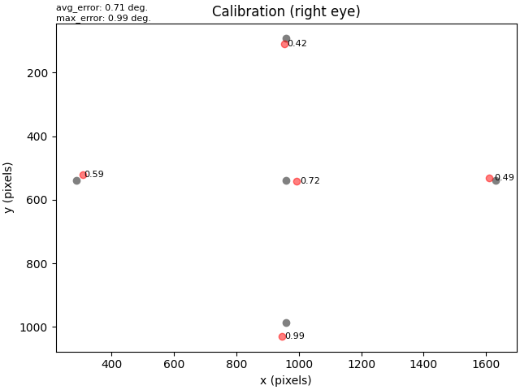
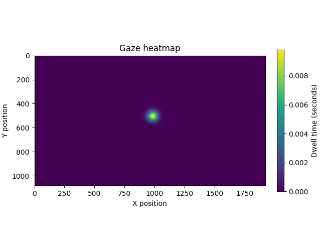

Note
Go to the end to download the full example code
Working with eye tracker data in MNE-Python#
In this tutorial we will explore simultaneously recorded eye-tracking and EEG data from a pupillary light reflex task. We will combine the eye-tracking and EEG data, and plot the ERP and pupil response to the light flashes (i.e. the pupillary light reflex).
# Authors: Scott Huberty <seh33@uw.edu>
# Dominik Welke <dominik.welke@web.de>
#
#
# License: BSD-3-Clause
# Copyright the MNE-Python contributors.
Data loading#
As usual we start by importing the modules we need and loading some
example data: eye-tracking data recorded from SR research’s
'.asc' file format, and EEG data recorded from EGI’s '.mff' file format. We’ll
pass create_annotations=["blinks"] to read_raw_eyelink() so that
only blinks annotations are created (by default, annotations are created for blinks,
saccades, fixations, and experiment messages).
import mne
from mne.datasets.eyelink import data_path
from mne.preprocessing.eyetracking import read_eyelink_calibration
from mne.viz.eyetracking import plot_gaze
et_fpath = data_path() / "eeg-et" / "sub-01_task-plr_eyetrack.asc"
eeg_fpath = data_path() / "eeg-et" / "sub-01_task-plr_eeg.mff"
raw_et = mne.io.read_raw_eyelink(et_fpath, create_annotations=["blinks"])
raw_eeg = mne.io.read_raw_egi(eeg_fpath, preload=True, verbose="warning")
raw_eeg.filter(1, 30)
Loading /home/circleci/mne_data/MNE-eyelink-data/eeg-et/sub-01_task-plr_eyetrack.asc
Pixel coordinate data detected.Pass `scalings=dict(eyegaze=1e3)` when using plot method to make traces more legible.
Pupil-size area detected.
There are 2 recording blocks in this file. Times between blocks will be annotated with BAD_ACQ_SKIP.
Filtering raw data in 1 contiguous segment
Setting up band-pass filter from 1 - 30 Hz
FIR filter parameters
---------------------
Designing a one-pass, zero-phase, non-causal bandpass filter:
- Windowed time-domain design (firwin) method
- Hamming window with 0.0194 passband ripple and 53 dB stopband attenuation
- Lower passband edge: 1.00
- Lower transition bandwidth: 1.00 Hz (-6 dB cutoff frequency: 0.50 Hz)
- Upper passband edge: 30.00 Hz
- Upper transition bandwidth: 7.50 Hz (-6 dB cutoff frequency: 33.75 Hz)
- Filter length: 3301 samples (3.301 s)
[Parallel(n_jobs=1)]: Done 17 tasks | elapsed: 0.1s
[Parallel(n_jobs=1)]: Done 71 tasks | elapsed: 0.5s
The info structure of the eye-tracking data tells us we loaded a monocular recording with 2 eyegaze channels (x- and y-coordinate positions), 1 pupil channel, 1 stim channel, and 3 channels for the head distance and position (since this data was collected using EyeLink’s Remote mode).
raw_et.info
Ocular annotations#
By default, EyeLink files will output ocular events (blinks, saccades, and
fixations), and experiment messages. MNE will store these events
as mne.Annotations. Ocular annotations contain channel information in the
'ch_names' key. This means that we can see which eye an ocular event occurred in,
which can be useful for binocular recordings:
print(raw_et.annotations[0]["ch_names"]) # a blink in the right eye
('xpos_right', 'ypos_right', 'pupil_right')
Checking the calibration#
EyeLink .asc files can also include calibration information.
MNE-Python can load and visualize those eye-tracking calibrations, which
is a useful first step in assessing the quality of the eye-tracking data.
read_eyelink_calibration()
will return a list of Calibration instances,
one for each calibration. We can index that list to access a specific calibration.
Reading calibration data from /home/circleci/mne_data/MNE-eyelink-data/eeg-et/sub-01_task-plr_eyetrack.asc
number of calibrations: 1
Calibration |
onset: -11.543 seconds
model: HV5
eye: right
average error: 0.71 degrees
max error: 0.99 degrees
screen size: None meters
screen distance: None meters
screen resolution: None pixels
Calibrations have dict-like attribute access; in addition to the attributes shown in
the output above, additional attributes are 'positions' (the x and y coordinates
of each calibration point), 'gaze' (the x and y coordinates of the actual gaze
position to each calibration point), and 'offsets' (the offset in visual degrees
between the calibration position and the actual gaze position for each calibration
point). Below is an example of how to access these data:
offset of the first calibration point: 0.72
offset for each calibration point: [0.72 0.42 0.99 0.59 0.49]
x-coordinate for each calibration point: [ 960. 960. 960. 288. 1631.]
Let’s plot the calibration to get a better look. Below we see the location that each calibration point was displayed (gray dots), the positions of the actual gaze (red), and the offsets (in visual degrees) between the calibration position and the actual gaze position of each calibration point.
Plot the raw eye-tracking data#
Let’s plot the raw eye-tracking data. We’ll pass a custom dict into
the scalings argument to make the eyegaze channel traces legible when plotting,
since this file contains pixel position data (as opposed to eye angles,
which are reported in radians).
raw_et.plot(scalings=dict(eyegaze=1e3))
Handling blink artifacts#
Naturally, there are blinks in our data, which occur within "BAD_blink"
annotations. During blink periods, eyegaze coordinates are not reported, and pupil
size data are 0. We don’t want these blink artifacts biasing our analysis, so we
have two options: Drop the blink periods from our data during epoching, or interpolate
the missing data during the blink periods. For this tutorial, let’s interpolate the
blink samples. We’ll pass (0.05, 0.2) to
interpolate_blinks(), expanding the interpolation
window 50 ms before and 200 ms after the blink, so that the noisy data surrounding
the blink is also interpolated.
mne.preprocessing.eyetracking.interpolate_blinks(
raw_et, buffer=(0.05, 0.2), interpolate_gaze=True
)
Interpolating missing data during blinks...
Removing 'BAD_' from BAD_blink.
Important
By default, interpolate_blinks(),
will only interpolate blinks in pupil channels. Passing
interpolate_gaze=True will also interpolate the blink periods of the
eyegaze channels. Be aware, however, that eye movements can occur
during blinks which makes the gaze data less suitable for interpolation.
Extract common stimulus events from the data#
In this experiment, a photodiode attached to the display screen was connected to both the EEG and eye-tracking systems. The photodiode was triggered by the the light flash stimuli, causing a signal to be sent to both systems simultaneously, signifying the onset of the flash. The photodiode signal was recorded as a digital input channel in the EEG and eye-tracking data. MNE loads these data as a stim channel.
We’ll extract the flash event onsets from both the EEG and eye-tracking data, as they are necessary for aligning the data from the two recordings.
et_events = mne.find_events(raw_et, min_duration=0.01, shortest_event=1, uint_cast=True)
eeg_events = mne.find_events(raw_eeg, stim_channel="DIN3")
16 events found on stim channel DIN
Event IDs: [2]
16 events found on stim channel DIN3
Event IDs: [2]
The output above shows us that both the EEG and EyeLink data used event ID 2 for
the flash events, so we’ll create a dictionary to use later when plotting to label
those events.
event_dict = dict(Flash=2)
Align the eye-tracking data with EEG data#
In this dataset, eye-tracking and EEG data were recorded simultaneously, but on
different systems, so we’ll need to align the data before we can analyze them
together. We can do this using the realign_raw() function,
which will align the data based on the timing of the shared events that are present in
both Raw objects. We’ll use the shared photodiode events we extracted
above, but first we need to convert the event onsets from samples to seconds. Once the
data have been aligned, we’ll add the EEG channels to the eye-tracking raw object.
# Convert event onsets from samples to seconds
et_flash_times = et_events[:, 0] / raw_et.info["sfreq"]
eeg_flash_times = eeg_events[:, 0] / raw_eeg.info["sfreq"]
# Align the data
mne.preprocessing.realign_raw(
raw_et, raw_eeg, et_flash_times, eeg_flash_times, verbose="error"
)
# Add EEG channels to the eye-tracking raw object
raw_et.add_channels([raw_eeg], force_update_info=True)
del raw_eeg # free up some memory
# Define a few channel groups of interest and plot the data
frontal = ["E19", "E11", "E4", "E12", "E5"]
occipital = ["E61", "E62", "E78", "E67", "E72", "E77"]
pupil = ["pupil_right"]
# picks must be numeric (not string) when passed to `raw.plot(..., order=)`
picks_idx = mne.pick_channels(
raw_et.ch_names, frontal + occipital + pupil, ordered=True
)
raw_et.plot(events=et_events, event_id=event_dict, event_color="g", order=picks_idx)
50 events found on stim channel STI 014
Event IDs: [1 2 3 4]
50 events found on stim channel STI 014
Event IDs: [1 2 3 4]
Showing the pupillary light reflex#
Now let’s extract epochs around our flash events. We should see a clear pupil constriction response to the flashes.
# Skip baseline correction for now. We will apply baseline correction later.
epochs = mne.Epochs(
raw_et, events=et_events, event_id=event_dict, tmin=-0.3, tmax=3, baseline=None
)
del raw_et # free up some memory
epochs[:8].plot(events=et_events, event_id=event_dict, order=picks_idx)
Not setting metadata
16 matching events found
No baseline correction applied
0 projection items activated
Using data from preloaded Raw for 8 events and 3301 original time points ...
0 bad epochs dropped
Using data from preloaded Raw for 8 events and 3301 original time points ...
Using data from preloaded Raw for 8 events and 3301 original time points ...
Using data from preloaded Raw for 8 events and 3301 original time points ...
Using data from preloaded Raw for 8 events and 3301 original time points ...
For this experiment, the participant was instructed to fixate on a crosshair in the center of the screen. Let’s plot the gaze position data to confirm that the participant primarily kept their gaze fixated at the center of the screen.
Using data from preloaded Raw for 16 events and 3301 original time points ...
0 bad epochs dropped
Finally, let’s plot the evoked responses to the light flashes to get a sense of the average pupillary light response, and the associated ERP in the EEG data.
epochs.apply_baseline().average().plot(picks=occipital + pupil)
Applying baseline correction (mode: mean)
Total running time of the script: (0 minutes 26.878 seconds)
Estimated memory usage: 449 MB